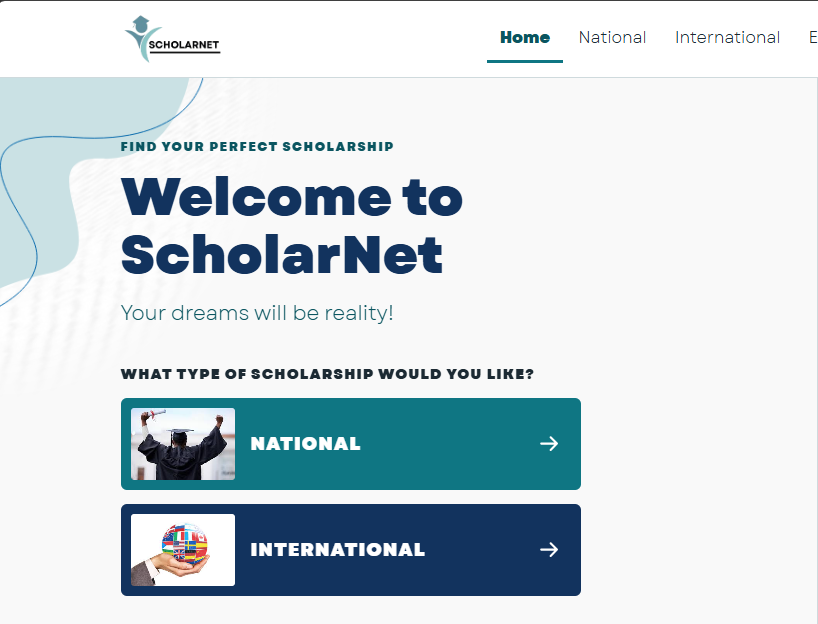

Featured Main Project
Group Project
ScholarNet — Scholarship Information Platform
HTML5 | CSS3 | JavaScript | Python (Kivy)
The Problem: Many students have difficulty finding scholarship opportunities because information is spread across different websites and sources, making it hard to compare requirements.
The Process: Developed an initial app using Python & Kivy, then adapted it into a responsive website using HTML, CSS, and JavaScript, organizing scholarship data into intuitive sections.
The Solution: ScholarNet brings educational opportunities together in one place, allowing users to explore national/international scholarships, read guidelines, and check student experiences.
My Specific Role: Researched and organized information about national and international scholarships, collecting and structuring data so students can explore opportunities easily.